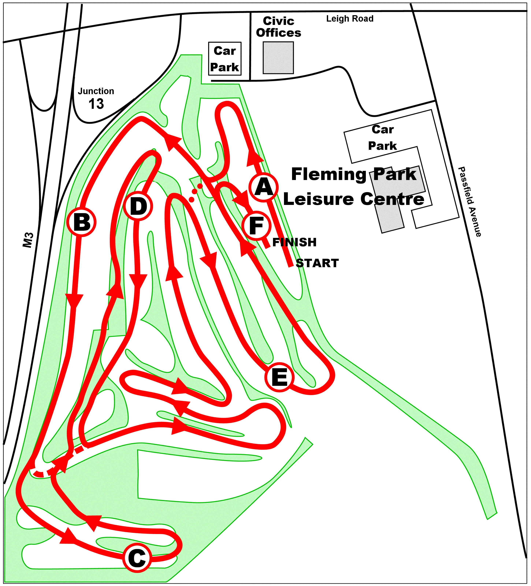

Saucony Hampshire Cross Country Championships
Saturday 5 January 2013

| Time | Age Group(s) | Course | Distance |
|---|---|---|---|
| 11:00 | Under 11 Boys | One mini lap (A - E - F) | 1600 m |
| 11:15 | Under 11 Girls | One mini lap (A - E - F) | 1600 m |
| 11:30 | Under 13 Boys | One short lap (A - BE - F) | 3450 m |
| 11:45 | Under 13 Girls | One short lap (A - BE - F) | 3450 m |
| 12:00 | Under 15 Boys | One medium lap (A - BDE - F) | 4350 m |
| 12:20 | Under 15 Girls | One medium lap (A - BDE - F) | 4350 m |
| 12:45 | Under 20 Women* | One medium lap, one short lap (A - BDE - BE - F) | 7100 m |
| 12:45 | Senior and Veteran Women | Two medium laps (A - 2xBDE - F) | 8000 m |
| 13:15 | Under 17 Women | One long lap (A - BCDE - F) | 5000 m |
| 13:40 | Under 20 Men | Two long laps (A - 2xBCDE - F) | 9200 m |
| 13:40 | Senior and Veteran Men | Two long laps, one short lap (A - 2xBCDE - BE - F) | 12000 m |
| 14:30 | Under 17 Men | Two short laps (A - 2xBE - F) | 6200 m |
* Please note a late amendment:
the Under 20 Women will run now one medium lap followed by one short lap, instead of the other way round.